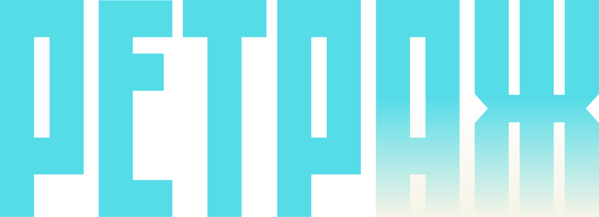
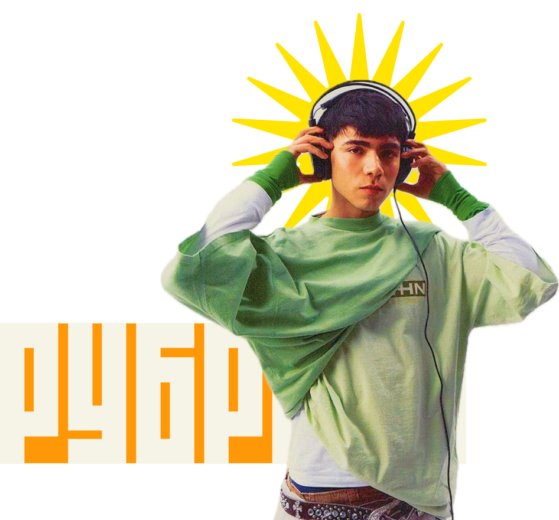
читай интересующие новинки в новом старом формате!
Выбирай близкую тебе рубрику и айда погружаться:


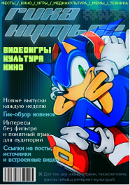


читай интересующие новинки в новом старом формате!
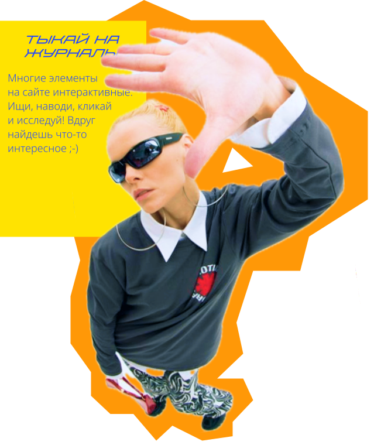
что и кто мы?
Журналы
У нашего медиа есть 5 жанров или же «мини-брендов» под которыми мы издаем выпуски на заданные тематики. Выбирай что тебе интересно и наслаждайся!
Гики, творческие люди или просто подростки, которые хотят знать общие медиа новости, найдут чем занять себя здесь. Не знаешь что почитать? Тыкай нашу кнопку рандома и погружайся!
свежие выпуски!
выпуски в тренде:
- Как тату покорли мир?
- подборка телевизионных интервью тату
- Цензура: тогда и сейчас
- Смелый шаг: удачные эксперименты в музыке и дебюты
- Вульгарные образы артистов девяностых
- Отголоски прошлого в нынешних песнях
Это и многое другое в выпуске, кликай!
Гикануться 25.12.25
Аллея 24.12.25
Аллея 16.03.26
Дейлик 13.09.25
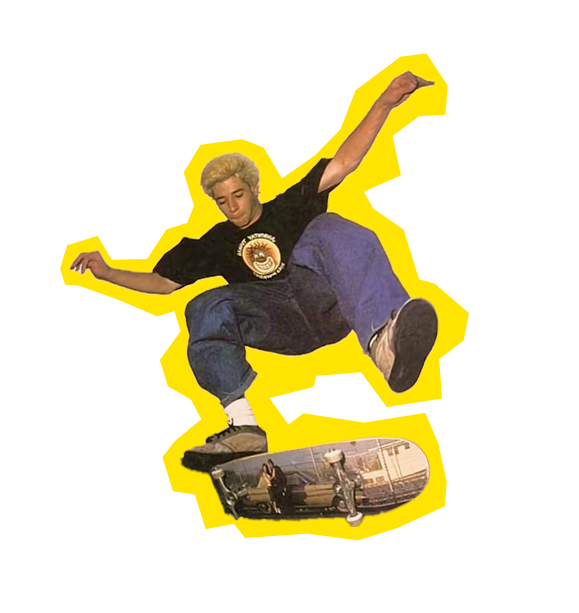
что новенького?
1
Киберпанк снова в моде
В мире гик-культуры снова вспыхнул интерес к киберпанку. Новые игры, аниме и комиксы возвращают нас в неоновые мегаполисы будущего с летающими машинами, хакерскими сражениями и корпорациями, контролирующими всё. Фанаты обсуждают детали вселенных и создают свои фан-арты и истории. Этот тренд не просто модный: он объединяет коммьюнити вокруг эстетики технологического будущего, социальной дистопии и крутых персонажей, которые балансируют на грани закона и хаоса.
Даже модные бренды используют киберпанк-элементы в одежде, аксессуарах и мерче. Хотите узнать, что нового выходит в жанре и какие старые шедевры стоит пересмотреть — следите за обновлениями!
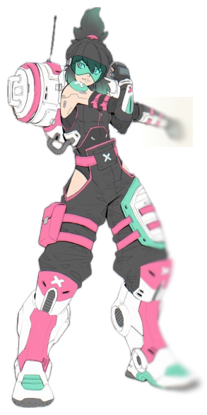
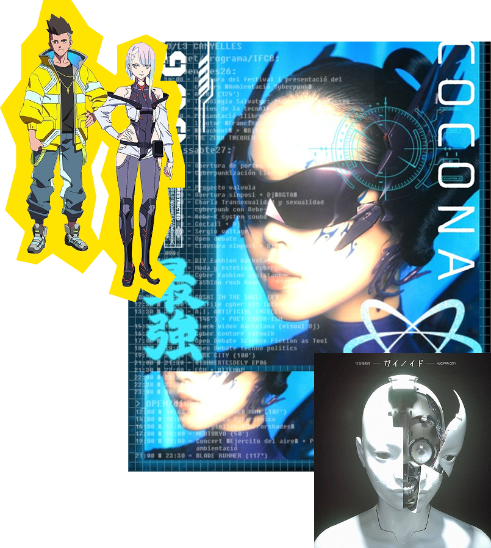
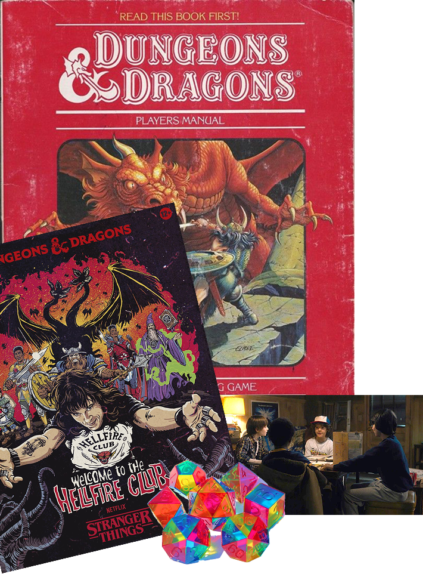
2
возвращение культовых настольных игр
Настольные игры снова в тренде! Новые издания культовых игр и локализации давно забытых шедевров захватывают внимание геймеров и коллекционеров. Не просто карточки и кубики — это целые миры с увлекательными механиками, стратегиями и кооперативными сюжетами.
Коворкинги и кафе устраивают турниры, где собираются фанатыmсо всех уголков города. Многие создают свои кастомные версии, используя 3D-печать фигурок и цифровые приложения. Интерес к настольным играм растёт не только как к развлечению, но и как способу социализации, общения и даже развития логики и креативности.
Как «Очень странные дела» возродили настолки и днд
читать!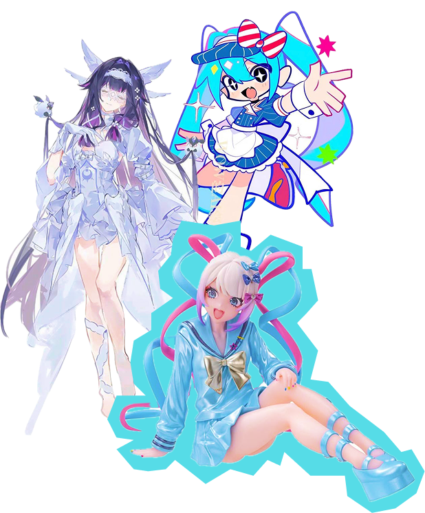
3
Аниме-бум нового поколения
Новое поколение аниме-проектов ломает привычные каноны: персонажи сложнее, сюжеты глубже, а визуальный стиль поражает воображение. Даже старые франшизы получают свежие переосмысления, которые становятся вирусными в соцсетях.
Фанаты обсуждают эпизоды, создают мемы и косплей, делятся теориями и фанфиками. Кроссоверы с видеоиграми, музыкальные коллаборации и VR-проекты делают аниме не просто медиапродуктом, а частью целой культуры. А если вы новичок, всегда найдётся список «must-watch» сезонов и мини-сериалов, чтобы погрузиться в этот мир.
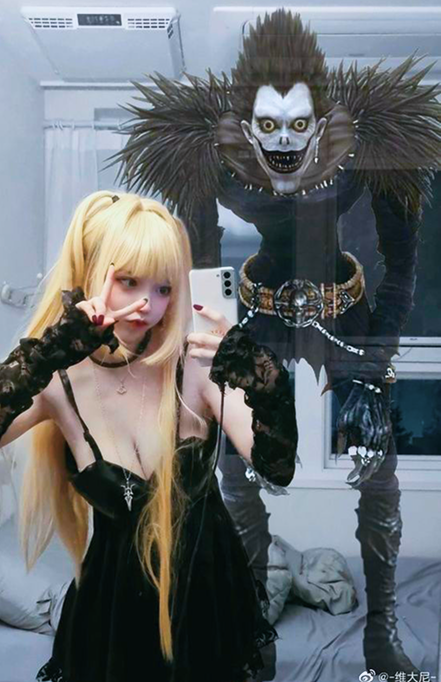
4
мир VR расширяется
Виртуальная реальность и метавселенные больше не фантастика — это место, где создаются собственные вселенные, общаются друзья и проходят события. Новые VR-игры и социальные платформы позволяют примерить на себя роли супергероев, космических исследователей и даже участников эпических квестов.
Появляются фанатские события, виртуальные концерты и выставки, где технологии смешиваются с креативом. Для гиков это шанс стать частью уникальной истории, экспериментировать с образами и даже создавать контент, который увидят тысячи людей.
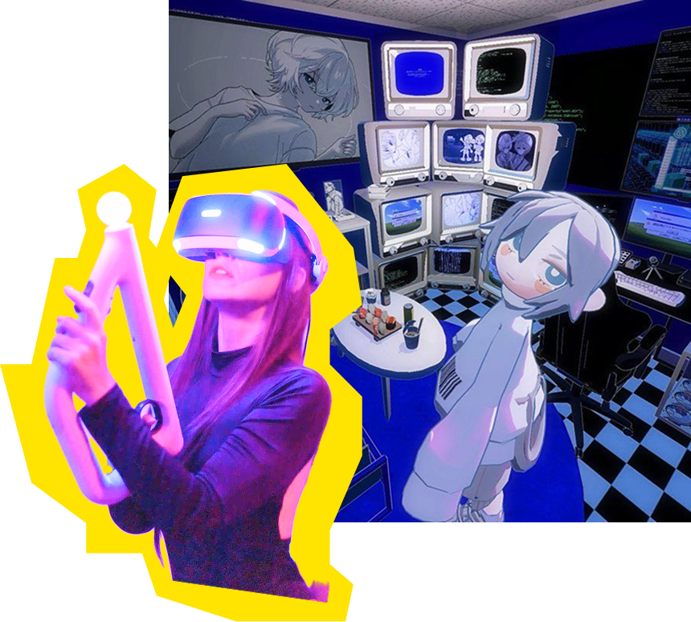
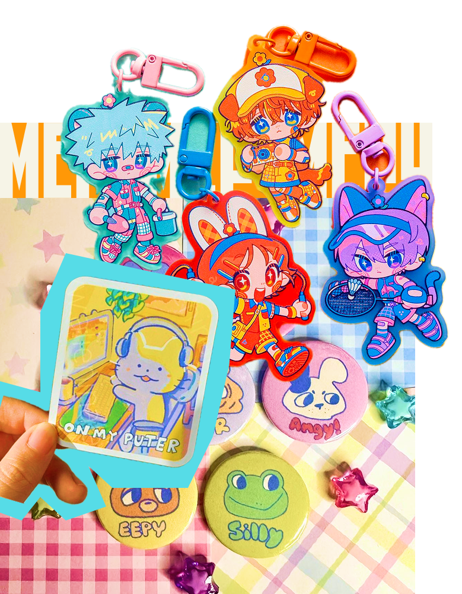
5
коллекционные вселенные и мерч
Фанаты снова охотятся за редкими фигурками, комиксами и лимитированными коллекционными наборами. Рынок мерча растёт: брендированные товары, коллаборации с известными авторами и эксклюзивные релизы вызывают настоящий ажиотаж.
Каждая новая коллекция становится событием: фанаты обсуждают качество, дизайн и редкость, создавая целые сообщества по интересам. Коллекционирование перестало быть просто хобби — это стиль жизни, способ выражения и даже инвестиция. Не пропустите главные релизы и тренды, чтобы оставаться в центре гик-культуры!
где заказывать мерч?
читать!